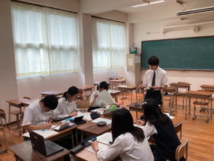

２日目も引き続き、吸音効果班、土色調査班、土壌硬度測定班に分かれて、調査を進めました。各班員が交代しながら調査を進めていきます。


途中、雨で調査を中断する場面もありましたが、その間も丹後海と星の見える丘公園の施設内でデータを整理したり、休息を取って次の調査に備えました。
雨が止んで再び調査へ。休息の間に研究テーマを思いついたのか、マツ（Pinus densiflora）の枝先にできているまだ若くて青い松ぼっくりを採集に行く班や、夜間の動物の行動調査を行うために赤外線カメラを設置する班なども出てきました。
現地に行ってみて思いつく研究テーマがあるのも、フィールド調査の醍醐味です。
また、夜には今回の調査でTAとして参加している卒業生２名から、高校時代に取り組んだ研究内容やカナダ・ケベックでの調査研究について、紹介をしてもらいました。
先輩が取り組んできた研究の話に興味津々の生徒たち。今まさに研究に取り組んでいるからこその視点で、実験条件や準備について、質問が飛び交いました。
最終日に向けて、大きく前進した２日目でした。

朝、亀岡駅をバスで出発し、午後から実地調査に入りました。
初日の調査は、4つの班に分かれて行いました。
植物による吸音効果を調べる班では、草原やクマザサ（Sasa veitchii）が多く生えている地点など、植物の種類による吸音効果の差について、パソコンで記録を取りながら実験を行いました。
土色調査を行う班は、調査地の選定を行い、卒業生サポートチームのメンバーで現在大学院でも研究されているTA（ティーチングアシスタント）に教わりながら調査断面を作成しました。


粘土からレンガを作る班も、調査地を見つけて土を掘りだしていきます。

またサイエンス部を中心とした班では、昨年度のサイエンス部も調査していた宿泊棟横の地点を調査地として、地点ごとの土壌の硬度を測定しました。

天候に恵まれた今日の１日をいかに使うか、各班で工夫を凝らしました。
８月６～７日に神戸国際展示場で開催された令和６年度SSH生徒研究発表会にアカデミックラボ・理科ラボのメンバー４人が参加しました。
 北海道から沖縄まで全国のSSH校が神戸に集まり、２３１本の研究発表がありました。
北海道から沖縄まで全国のSSH校が神戸に集まり、２３１本の研究発表がありました。
本校は「化粧品に利用可能な植物由来機能性成分を探し求めて」というタイトルで発表しました。
答えやすい質問から専門性が高い質問まで飛び交い、新しい見方や考え方を得ることができました。
わかりやすく他者へ説明する力、深く論理的に思考し議論する力の大切さを学びました。


今回の本校の出場チームのようにグループ研究を行っている学校が多い一方で、同じ高校生でも個人研究を行い発表をしている生徒の姿を見て、その熱意や内容理解の深さにとても関心しました。


この経験をさらに自分たちの研究に生かし、また後輩たちへ伝えて嵯峨野高校の探究をより盛り上げていきたいと思います。
自らの研究を発表できたことは勿論、他校のレベルの高い研究を見て、様々な意見をもらうことで成長できた２日間でした。
７月30日（火）に、本校生徒35名が京都大学の化学研究所を見学しました。化学研究所は宇治キャンパスにある京都大学の附属研究所で、大学の学部・学科の境界を越えて、化学を軸とした様々な領域の研究室が最先端の研究に取り組んでいます。今回は３つの研究室に訪問させていただき、最前線の研究を肌で実感することができました。
まず、化学研究所の歴史ある施設「碧水舎」での全体ガイダンスの後、生徒は３つのグループに分かれ、各研究室で見学をしたり、御講義を聴講したりしました。

中村研究室では有機分子変換化学領域の研究を通じて、新規有機合成方法や有機材料の創出に取り組まれています。まず、青木敏先生から、化学の役割や有機化学・有機金属化学について御講義いただいた後、実験室に移動し、有機金属化合物として重要なGrignard（グリニャール）試薬によりヨウ素が還元されて色が消失することを利用した滴定実験について御講義・演示していただきました。高校生にとっては、張り巡らされた何本ものガラス管からなる反応ラインが印象的でした。


若宮研究室では分子集合解析研究領域の研究に取り組まれており、今回は主にペロブスカイト太陽電池の研究設備について見学・御講義をいただきました。空気中のわずかな酸素や水分などにも影響を受けるため、アルゴンガスで完全に置換されたグローブボックス中での操作など、実験は一貫して不純物やゴミなどの混入をさける環境で行われており、また、電子顕微鏡をはじめ多数の高額な装置があり、将来このような環境で研究が出来たら･･･と感じさせられました。
緒方研究室は化学生命科学研究領域で微生物生態進化学の研究に取り組まれています。今回は、ウィルスでありながら細胞性生物並みの大きさをもつ「巨大ウィルス」の研究に関して見学・御講義をいただきました。この分野では、従来の実験を手段とする研究（ウェット研究）に加え、コンピューターによるゲノム解析などの「ドライ研究」は必須です。こちらでは、スーパーコンピューターの見学の後、巨大ウィルスがアメーバを宿主として感染した様子を実際に顕微鏡で観察させていただきました。

今回の見学で、高校生がイメージする教科としての「化学」が、実は様々な領域の「科学」の軸となる学問であることを知ることができ、有意義な体験となりました。
８月２日（金）と３日（土）の２日間、本校ESS部の１年生が一般社団法人パーラメンタリーディベート人財育成協会（ＰＤＡ）主催の全国高校即興型英語ディベート合宿・大会2024に参加しました。本大会はオンラインで開催され、日本全国から英語ディベートに取り組む高校が参加しました。
即興型英語ディベートでは、その場で与えられた論題に対して、賛成または反対の立場で15分間準備した後、英語によるディベートを行い、審査員が勝敗を判定します。
今回参加した１年生は、初めてのオンライン形式、初めての他校との試合で、最初は緊張した面持ちでしたが、全ての試合を懸命に戦い、予選ラウンド３戦中２勝と勝ち越すことができました。
引き続き嵯峨野高校ESS部では、実践的な英語力を身に付けるべく、様々な形式の英語ディベートに楽しみながら取り組んで参ります。
夏の暑さで有名な多治見市ですが、京都人にとってはいつも通りの暑さでした。
残念ながら入賞はなりませんでしたが、７月のNHK杯の大会の時と同様に、全国の多くの学校の放送部の人たちと、作品交換や卒業生の武田綾乃さん原作の「花は咲く、修羅の如く」の紹介で交流を行いました。
また、この秋の京都府高等学校総合文化祭の番組作成のためのインタビュー撮影も行い、多くの学校が快く応えて下さいました。お世話になった皆様、ありがとうございました。
放送部は来年の全国総文香川大会にも出場できるよう頑張って参りますので、ご声援よろしくお願い致します。
８月１日、サマーセミナーで「京都薬用植物園」の見学に行きました。
京都薬用植物園は、武田薬品工業株式会社が絶滅危惧種を含む重要な薬用・有用植物資源の収集・保全を行い、環境教育の支援活動のために開放されている施設です。
「京都薬用植物園」見学は本年度からの新たな取組ということもあり、楽しみにしていた生徒達。園内では、３班に分かれて見学を行いました。

園内にはアスピリンが発見されたヤナギや、お茶としても使用されているセンブリなど、様々な植物が並びます。

また、生薬や漢方薬として使用されている植物種の中には、味や匂いを感じられるものもあります。案内してくださった社員の皆様のアドバイスを聞きながら、実際にその味を体験してみました。
最初はおそるおそるだった生徒達も、五感で感じられる植物の魅力に、次第に積極的に触れようとしていました。また、質疑応答の時間には歴史と植物のかかわりなどの幅広い質問が出ました。
武田薬品工業株式会社の皆様、ありがとうございました。
７月29日（月）に、本校生徒39名が大阪大学を訪れ、核物理学についての知見を深めました。
午前は大阪大学大学院理学研究科の川畑貴裕教授から、この世に存在している原子核の謎が宇宙の成り立ちと密接に関係があることについて、非常にわかりやすく御講義していただきました。例年、本講義は嵯峨野高校で実施していたのですが、今年度は大阪大学豊中キャンパスの理学研究科にて受講しました。なお、理学研究科には、日本初のノーベル賞受賞者 湯川秀樹博士がコロンビア大学で愛用されていた黒板が移設されており、御講義後に見学しました。この黒板はコミュニケーションスペースに設置されていて、学生が自由に使えるそうです。


午後は吹田キャンパスに移動し、コロナ禍以降５年ぶりに大学生協の食堂で食事をしました。高校生にとっては、これも大学の雰囲気を直に味わう楽しい体験となりました。
食事後は、大阪大学の核物理研究センターを訪問しました。まず、保坂淳教授から"物理学とはいかなる学問か"、"ミクロな世界を見るためには、なぜ巨大な装置とエネルギーが必要なのか"について御講義いただきました。また、核物理研究センターではアルファ線放出核種アスタチン－211を生成し、阪大病院などでのアルファ線核医学治療に供給するための新たな施設「TATサイクロトロン棟」が竣工し、実用化に向けた準備を整えるなど、医学分野への貢献についても御説明いただきました。
ひきつづき福田光宏教授から加速器施設の説明後に加速器を見学しました。ここには世界有数の加速器－ＡＶＦサイクロトロンとリングサイクロトロンがあり、国内外から様々な研究者が実験に訪れ、成果が生み出されています。リングサイクロトロンでは、陽子なら光の速さの70％まで加速することが出来ます。


１・２年生にとって、すべてを理解することは難しいかも知れませんが、設備の巨大さや複雑な構成を目の当たりにするだけでも、日進月歩の核物理研究の世界を充分に体感することができ、自分の将来の研究者としてのイメージを持つには充分な実りのあるサマーセミナーでした。


７月３０日金曜日に、国語サマーセミナーを実施しました。
まず、廬山寺 町田宣亨執事長様から、廬山寺の歴史や、廬山寺と紫式部との関わりについてお話しいただきました。
千年前に紫式部の邸宅があったとされる場所に、現在、廬山寺があります。
この場所で藤原宣孝との結婚生活をおくり、一人娘の賢子（大弐三位）を育てたと言われています。
『源氏物語』をここで執筆した紫式部のことを思いながら、源氏庭の前で、お話を伺いました。
次に、京都御所のフィールドワークです。１８６９年に東京に移られるまでの約５００年間、天皇がお住まいの場所でした。平安時代の建築様式をもとに建て直されたものです。紫宸殿と清涼殿など、古文の舞台となっている場所を訪れました。
『源氏物語』は、この場所から始まります。
「ほんまもん」を体験する、有意義な体験となりました。
 ７月30日、サマーセミナーで大塚国際美術館に行きました。
７月30日、サマーセミナーで大塚国際美術館に行きました。
美術館では現地さながらの展示に圧倒されたり、美術のみならず世界史の先生にも詳しい解説をいただいたり...。まるで世界遺産を旅するような美術鑑賞に、知的好奇心がますます高まった様子でした。


高校を卒業後、皆さんには世界の方々と共存していく社会が待っています。美術を通じて多文化共生を学び、どうか...より良い未来を創造してください！キラキラした目で作品を見ていた、嵯峨野生の好奇心に期待しています。
7月29日(月)にサマーセミナーとして法学フィールドワークを実施しました。

午前中は京都地方裁判所にて、まず裁判所職員の方から裁判のしくみについて講義を受け、法廷内の見学や法服を試着しました。嬉しそうに記念撮影をする姿が印象的でした。
その後、実際の裁判において、検察官の論告求刑やそれに対する弁護人の弁論を傍聴し、厳粛な雰囲気と迫力を感じることができました。
午後からは裁判所の隣にある弁護士会館で、弁護士の指導の下で模擬裁判を実施しました。弁護士の方から刑事裁判の原則について説明を受けたのち、コンビニでの強盗事件を題材として模擬裁判を行いました。それぞれ裁判官役・被告人役・検察官役・弁護人役・被害者や目撃者などの証人役になってロールプレイをしたのち、全員でどのような判決を出すべきかについて、班で議論し、発表しました。全員に異論のない「事実」と、立場によって見方の変わる「主張」を切り分けるという作業の難しさを感じつつも、無罪の推定や疑わしきは被告人の利益にといった刑事裁判の原則について理解を深めることができました。
最後に、班ごとに、６つの法律事務所を訪問させていただき、弁護士の働く現場を目の当たりにしました。「今までに担当した中で最も大変だった事件は何ですか」という生徒の質問に対して、「大変さにもいろいろありますが」という前置きをした上で、興味深い経験談を話してくださるなど、生徒たちは１日を通して、司法に関わる仕事の意義と面白さを体感することができ、将来への展望を描く上での「ほんまもん」に触れる貴重な機会となりました。
放送部は、7月22日～25日に国立オリンピック記念青少年総合センターとNHKホールで行われた第71回NHK杯全国高校放送コンテストに、朗読部門１名、ラジオドキュメント部門、創作テレビドラマ部門で参加しました。
22日には東海道新幹線がトラブルのため夜半まで運休するというハプニングの中、約8時間かけて会場にたどり着きました。
朗読部門とラジオドキュメントは残念ながら準決勝進出はなりませんでしたが、創作テレビドラマ部門が準決勝に進出しました（全国ベスト20）。テレビ部門で準決勝に進出するのは、本校放送部としては初めてとなります。
最終結果は、制作奨励賞（11～20位）でしたが、NHKホールのスクリーンに学校名が映し出されるのは感慨もひとしおでした。
大会では他県の学校とも積極的に交流し、作品交換や、本校の先輩である武田綾乃さん原作の、放送部を舞台とした漫画「花は咲く、修羅の如く」（来年アニメ化されます）の紹介にも励みました。
来年も、一つでも多くの部門で準決勝に進めるよう頑張りますのでご声援よろしくお願い致します。
７月20日、本校ESS部は、京都市立日吉ヶ丘高校にて開催されたパーラメンタリーディベート（即興型英語ディベート）交流会に参加しました。

本校からは３チームが参加、それぞれ２試合を戦い、３チームとも入賞することができました。最後は各校代表で編成したチームによるエキシビジョンマッチも行われ、本校からも２名が参加しました。


３年生は高校生活最後の対外試合に悔いなく実力を発揮していました。２年生はそんな先輩の背中を追いかけながら、例年にもまして強いチームワークでディベートに取り組んでいる姿がありました。１年生にとっては初の校外試合でしたが、先輩たちや他校の生徒さんたち、ジャッジの先生方から多くのことを学び取る機会となりました。
昨年からさらに人数が増えた嵯峨野高校ESS部、今後も楽しみながら英語ディベートに取り組んでいきます。
 

【終業式】蝉の大合唱がはじまるとともに、嵯峨野高校の１学期が終わりました。
校長先生の式辞ではスクールポリシー（学校の教育活動の方針）について、説明がありました。
【グラジュエーションポリシー（どのような力を育てたいか）】
嵯峨野高校が伝統的に大切にしている「校是」に現れています。「校是」とは時代が変わっても揺らぐことのない本校の教育の根幹をなすものです。『和敬・自彊・飛翔』これを実践できる人を育成したいと考えています。
【アドミッションポリシー（こういう生徒に来て欲しい）】
他者を思いやることができ、仲間と協力して物事に取り組もうとする生徒（校是の和敬にあたる）。向上心をもって学び続ける生徒（校是の自彊にあたる）。自分の持てる力を十分に発揮し最大限にのばしたいと考えている生徒（校是の飛翔にあたる）。生徒のみなさんが、まさに日々実践してくれていると感じています。
【カリキュラムポリシー（どんな教育活動を行うのか）】
特に次の言葉を大事にしています。「ほんまもんの学びに出会い、一人一人が活躍できる学校」。「一人一人が活躍できる」については、受賞や成績に関わらず、全力で取り組めた生徒、それぞれの努力と成長を活躍だと思っています。一人一人の生徒の皆さんが、それぞれの場面や状況で活躍できる、そんな学校にしていきたいと考えています。「ほんまもんの学び」については、ただ大学に合格するためだけの勉強であるとか、暗記しただけの知識に留まらない、みなさんの将来に役立つような「ほんまもんの学び」を大切にしていきたいという思いを込めています。養老孟司さんの言葉に「変わっていくこと、それが学ぶということ、知るということです。自分が変わっていなかったら、何も学んでいないと思えばいい。」という言葉があります。こういうことこそが学んでいくことの醍醐味だと思っています。授業だけでなく部活動や学校行事でも、この学びは含まれています。自分で視野を狭めてしまうことがないように、大きな視野に立って「ほんまもんの学び」をぜひ深めてほしいと思っています。学校としても生徒のみなさんが「ほんまもんの学び」を経験できるような教育を提供していきたいと考えています。
また、夏休みを安全に過ごしてもらうために以下のことに注意してください。
「暑さ対策」熱中症警戒アラートなどに留意し、暑さ対策を意識してください。
「コロナ対策」コロナウイルスが再び活性化しています。夏休みは人混みに出かける機会も増えると思います。感染予防の意識を高めて行動してください。
「水の事故の防止」先日、鴨川上流で高校生の痛ましい事故がありました。水辺に出かける機会も増えると思いますが、事故防止に十分に留意してください。
夏休みは普段体験できないことが体験でき「ほんまもんの学び」に出会う絶好の機会だと思いますが、健康・安全があってこそ、それが達成できると思います。みなさんが全員元気で多くの学びを得て、２学期が迎えられることを願って式辞とします。
良い夏にしてください。
式典が終わって・・・
今年が高校生活最後の夏休みとなる、3年生のH Rを覗いてみると...

{kind=link}
{kind=link}
{kind=link}
{kind=link}
{kind=link}
{kind=link}
{kind=link}
{kind=link}
{kind=link}
{kind=link}
{kind=link}
{kind=link}
{kind=link}
{kind=link}
{kind=link}
{kind=link}
{kind=link}
{kind=link}
{kind=link}
{kind=link}
{kind=link}
{kind=link}
{kind=link}
{kind=link}
{kind=link}
{kind=link}
{kind=link}
{kind=link}
{kind=link}
{kind=link}
{kind=link}
{kind=link}
{kind=link}
全員の夏休みの目標（？）を書いた黒板があったり、生徒同士で声を掛け合ったり...夏の日差しに負けぬ、青春のきらめきを見ることができました。さあ、この夏、精一杯を体験しよう！輝け！嵯峨野生！！
{kind=link}
{kind=link}
{kind=link}
７月１３・１４日に本校にて中学３年生対象学校説明会を開催しました。
当日はたくさんの中学生とその保護者の方々に来校していただきました。
誠にありがとうございました。
全体会では校長先生からのあいさつ、在校生によるラボや学校生活についてのプレゼンテーション、教育推進部からの教育内容等の説明を行いました。その後、施設見学と個別相談等も行いました。
また、来校される中学生のために広報委員で様々な企画を提案し、実現することができました。今回は、学校のおすすめスポットや部活動の活動場所・活動時間を掲載したチラシを作成し、配布しました。生徒が対応する個別相談は、始終満席状態となり大変好評でした。
全体会の様子
{kind=link}
{kind=link}
{kind=link}
全体会後の様子
{kind=link}
{kind=link}
{kind=link}
次回は９月１４・１５日に進学説明会を開催予定です。
７月１３日（土）～１４日（日）にかけて和歌山県のビッグホエールで行われました 近畿高等学校剣道大会に出場しました。
各府県の予選を勝ちあがってきた精鋭ばかりの学校を３校ずつのリーグに分け、３校のうち１校のみが進出できる決勝トーナメントを目指して戦います。本校の相手は、大阪府代表の金光大阪と和歌山県代表の和歌山工業でした。金光大阪は、練習試合で何回も対戦したことがありましたが、いつもかなりの大差で負けていました。しかし、今回は先鋒の選手から攻め続け、１本になりそうな惜しい技も繰り出すことができ、最後の大将に至るまでほぼ互角の戦いができました。残念ながら僅差の０－１で負けましたが、本校の選手たちは以前の対戦時とは全く別のチームになっていました。
次の対戦相手である和歌山工業は、和歌山県１位でインターハイに出場する超強豪校でしたが、選手たちは本気で勝つべく気合いを入れ直し、試合にのぞみました。試合開始から、全く気後れすることなく、強い気持ちで試合をし、相手を圧倒している時間帯も見られました。最終的に敗れはしましたが、それぞれが持ち味を発揮して精一杯戦っていました。
本人たちも「負けたことは悔しいですが、強い気持ちで思い切って攻めることができました」「１人１人が自分の役割を意識し、チームで戦う嵯峨野らしさが存分に発揮できたと思います」等の感想を述べるなど充実した様子が伺えました。６月のインターハイ予選後からの１ヶ月で技術の部分はもちろんのこと、気持ちの部分での成長が素晴らしかったと感じています。
また当日は、男子部員はもとより多くの保護者等の皆様も応援に駆けつけてくださり、熱い応援をしていただきました。今までのご支援および心からの声援本当にありがとうございました。
これで３年生の部員は完全に引退になりますが、次の目標に向けて今の粘り強さと目標に向かう気持ちの強さと集中力を発揮してくれるものだと確信しています。
{kind=link}
{kind=link}
この夏、将棋部は２つの全国大会に出場します。
１つは，８月１日・２日に岐阜県高山市で行われる第60回全国高等学校将棋選手権大会（第48回全国高等学校総合文化祭）です。５月に行われた第60回全国高等学校将棋京都府選手権大会の男子団体で昨年に引き続き優勝し、出場を決めました。昨年の全国大会では予選リーグ敗退でしたが、今年は上位入賞を目指します。
{kind=link}
もう１つは８月20日・21日に福岡市で行われる第37回全国高等学校将棋竜王戦です。６月に行われた第37回全国高等学校将棋竜王戦京都府予選では、本校生徒が優勝・準優勝を独占しました。本校からは久々の竜王戦全国大会出場です。
{kind=link}
{kind=link}
全国大会直前となり、練習にも一層熱が入っています。
{kind=link}
頑張ってきますので、温かい応援よろしくお願いします。
7月6日土曜日に、サマースクールの一環で the 2024 English Immersion Day (英語漬けになる1日）を開催しました。AETの先生方が準備してくださった個性豊かな企画にのり、意欲のある1年生17人が楽しみながらどっぷり英語漬けになりました！
On Saturday, July 6th, six AETs came to Sagano High School to hold the 2024 English Immersion Day, an event designed to let the students have fun and express themselves in an immersive, all English environment.
{kind=link}
After a brief opening speech, the students broke into small groups to attend various classes and workshops taught by the AETs, with activities ranging from role playing to storytelling, the students were able to use their English language skills for unique and expressive conversation.
{kind=link}
In the afternoon, the students broke into teams and participated in improv comedy workshops, acting out in different games and situations, entirely in English! After some rehearsal, the teams all came together to perform for each other and the AETs, who formed a panel of judges. All the students received prizes from the AETs for their hard work and performances!
{kind=link}
This year's Sagano English Immersion Day was a wonderful experience for the students! They had an amazing time and made great use of their English language skills!
{kind=link}
〒616-8226
京都市右京区常盤段ノ上町15番地
TEL 075-871-0723 FAX 075-871-0724
E-mail [email protected]